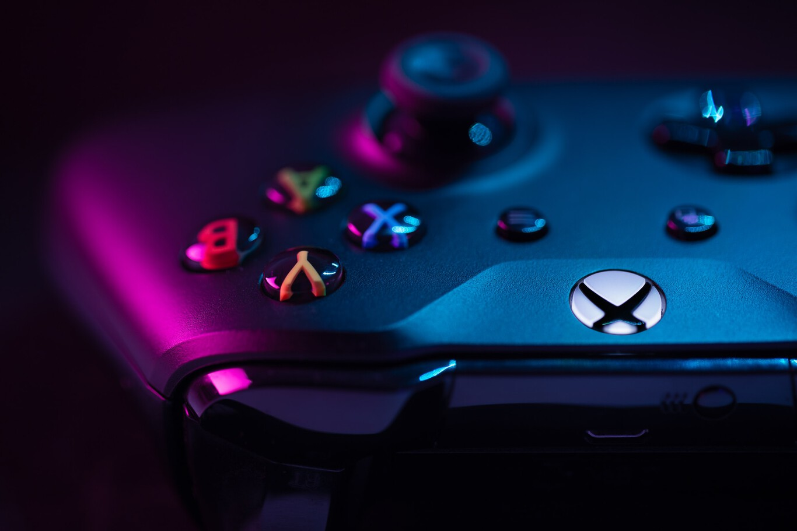
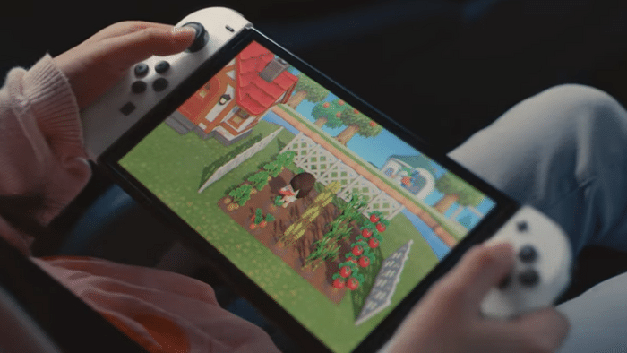
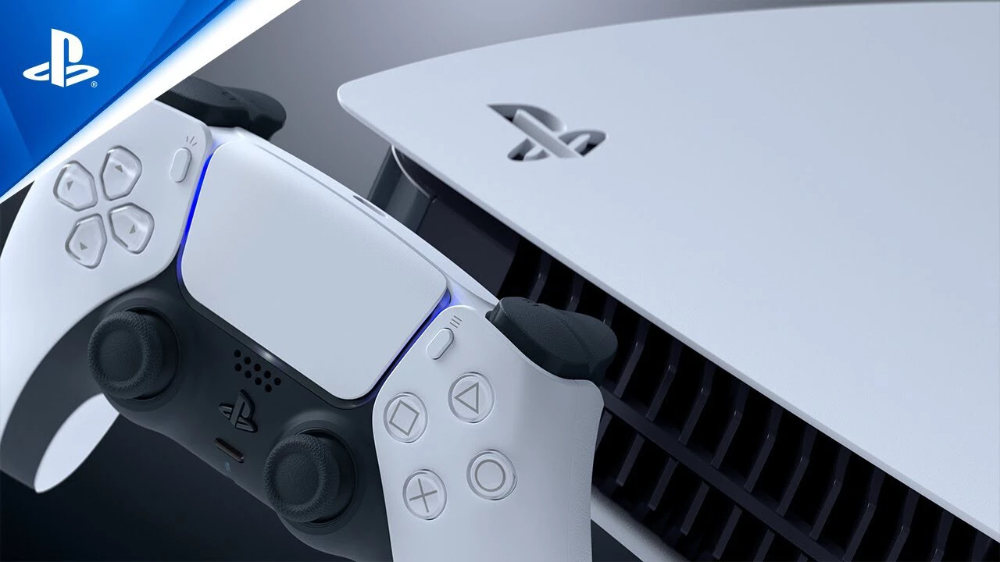

Microsoft prueba en algunos países un plan para compartir Game Pass Ultimate con hasta cuatro personas
Los rumores eran ciertos. Microsoft estaba contemplando ampliar Xbox Game Pass Ultimate con una suscripción que permitiría
compartir el servicio con familiares o amigos. El gigante de Redmond ha anunciado este jueves que las pruebas de este nuevo
plan empezarán en dos países, ...
Leer más

Juegos gratis de diciembre en PS Plus, Xbox Gold, Epic Games, Prime Gaming y Stadia Pro
Llega un nuevo mes y, como de costumbre, los principales servicios de suscripción de PS5, Xbox Series X/S, PS4, Xbox One
y PC se actualizan para ofrecer a sus miembros nuevos títulos a coste cero disponibles durante el tiempo que mantengan activa
la suscripción. A continuación podéis ver una completa recopilación...
Leer más

Nintendo Switch, la consola más vendida del pasado Black Friday en Reino Unido
Hoy mismo ha sido compartido un nuevo e interesante mensaje que se relaciona directamente con
Nintendo. Estamos hablando en este caso de novedades centradas en la compañía. En concreto, se
trata de más detalles sobre su desempeño en el Black Friday. Tras conocer...
Leer más

¿La PlayStation 6 para cuándo? Según este documento de Sony, la compañía lo tiene bastante claro
Es prácticamente imposible conseguir una PS5 en una tienda, pero eso no impide que Sony ya esté mirando hacia el futuro. Mientras
algunos todavía aguardan para recibir su consola de nueva generación, la compañía japonesa ha confesado que ya apunta hacia la PS6.
Leer más